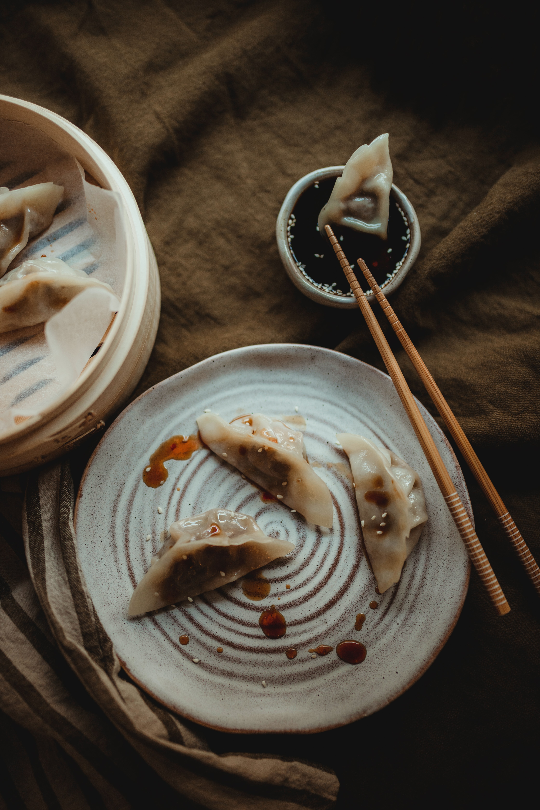

송명규는 1998년 9월 24일 제주도 제주시에서 태어났다. 신광초등학교와 아라중학교를 거쳐 인문계고등학교인 제주제일고등학교를 졸업하고 상경하였다. 계원예술대학교 영상디자인과에 진학을 하여 상경살이를 하였다. 공군을 입대하여 제16전투비행단에서 복무를 하였다. 현재는 학교를 자퇴하고 새로운 시작을 위해 준비하는 중이다. 
성인(한국에서는 대학을 가게 되면 성인으로 생각하는 사람들이 많다)이 되고 나서 짧은 시간에 많은 알바들을 하였다. 처음으로 세븐일레븐 제주공항점을 하였다. 그 후에 고기집, 덮밥집, 호텔 웨딩홀, 이마트 CJ 냉동창고 물류, 밭일을 했다. 군대에 전역하고 나서 처음으로 영화관 알바를 하였다. 영화관 알바를 그만두고 부천국제판타스틱영화제에 지원하여 23살이라는 나이에 처음 사회생활을 하게 되었다. 그 일은 현재까지 하다가 지금은 퇴사를 한 상태이다.